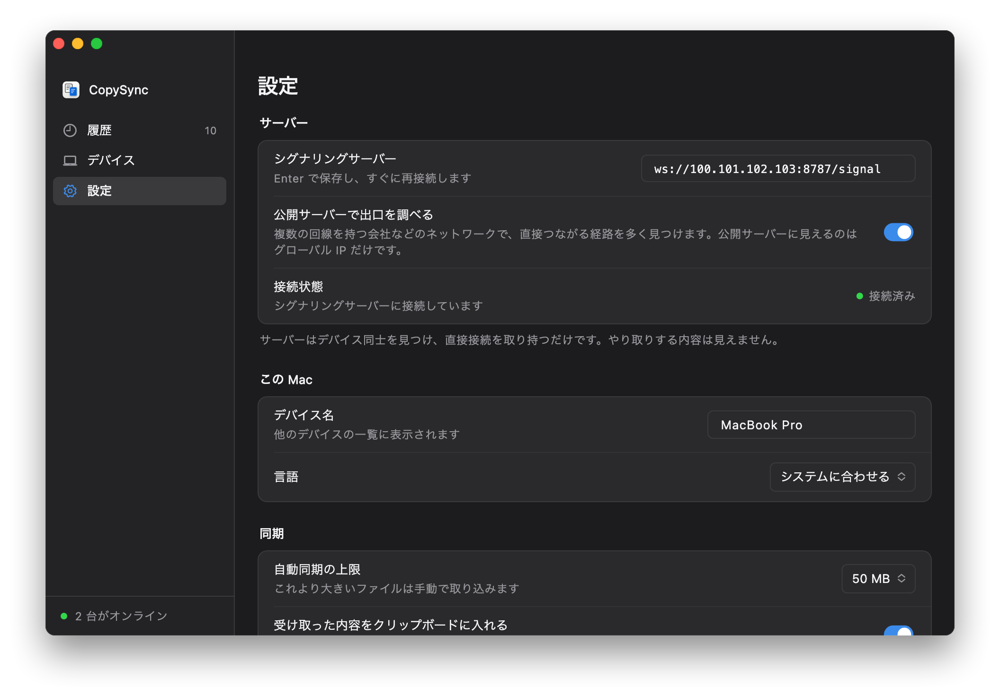

同じ LAN にあるように
Tailscale はデバイスどうしをつなぐネットワークツールです。同じアカウントでサインインしたデバイスにはそれぞれ 100 で始まる固定のアドレスが割り当てられ、実際にどこのネットワークにいても、そのアドレスで互いに届きます。CopySync のサーバーをこのアドレスでインストールし、アプリにも同じアドレスを入力すれば、あとは LAN に置く場合と同じです。
- サーバーは自宅のまま。電源を入れたままの Windows・Mac・Linux なら何でもよく、LAN に置く場合と同じです。
- すべてのコンピューターに Tailscale を入れ、同じアカウントでサインインします。サーバーを動かすコンピューターも同様です。
- 二重の暗号化。Tailscale の WireGuard トンネルの中を、CopySync 自身のエンドツーエンド暗号化接続が通ります。Tailscale にもサーバーにも内容は見えません。
始める前に
- 電源を入れたままのコンピューター
- サーバーを動かします。条件はLAN に置く場合と同じで、電源が切れたりスリープしたりすると同期は止まります。Tailscale のアドレスは変わらないので、ルーターでアドレスを固定する必要はありません。
- Tailscale のアカウント
- 個人利用は無料で、Google、Microsoft、GitHub、Apple のアカウントでサインインできます。すべてのデバイスで同じアカウントを使います。
- すべてのコンピューターに Tailscale
- Windows、macOS、Linux 用のクライアントがあります。CopySync を使うコンピューターにはすべて必要で、自宅から動かないものも同じです。
- ZeroTier でも同様
- 各デバイスに固定の仮想アドレスを割り当てるツールなら同じ手順で使えます。サーバーをそのアドレスでインストールし、アプリにも入力します。ここでは Tailscale を例にします。
ステップ 1
各コンピューターに Tailscale を入れる
サーバーを動かすコンピューターと、同期するすべてのコンピューターに入れて、同じアカウントでサインインします。
- Tailscale の公式サイトから OS に合ったクライアントをダウンロードしてインストールします。Linux では
curl -fsSL https://tailscale.com/install.sh | shを実行してからsudo tailscale upを実行し、表示されたリンクを開いてサインインします。 - Tailscale を開いてサインインします。すべてのコンピューターで同じアカウントを使います。
- サインインすると、Tailscale の管理画面にすべてのデバイスが並び、それぞれに 100 で始まるアドレスが付いています。
| デバイス | Tailscale のアドレス | OS |
|---|---|---|
| mac-mini サーバー | 100.101.102.103 | macOS |
| macbook-pro | 100.88.20.5 | macOS |
| home-pc | 100.92.41.17 | Windows |
サーバーを動かすコンピューターでは、もうひと手間
- Windows：通知領域の Tailscale アイコンを右クリックし、「Preferences」で「Run unattended」をオンにします。そうしないとサインアウトしたときに Tailscale が切れ、外のコンピューターからサーバーに届かなくなります。
- Mac：ログインしたまま、スリープさせず、Tailscale がログイン時に開くようにしておきます。CopySync のサーバーもログイン中だけ動きます。
- キーの有効期限をオフに：Tailscale は初期設定で 180 日ごとにデバイスの再サインインを求めます。管理画面の Machines ページで、サーバーの行の右端のメニューから「Disable key expiry」を選びます。
ステップ 2
サーバーの Tailscale アドレスを調べる
サーバーを動かすコンピューターで、メニューバー（Windows では通知領域）の Tailscale アイコンをクリックすると、メニューにこのデバイスのアドレスが表示されます。ターミナルで tailscale ip -4 を実行しても分かります。
% tailscale ip -4 100.101.102.103
以下では 100.101.102.103 を例にします。あなたのアドレスに置き換えてください。
ステップ 3
そのアドレスでサーバーを入れる
インストールスクリプトは初期設定で LAN のアドレスを使います。ここでは Tailscale のアドレスを指定して、外のコンピューターからもサーバーの中継を使えるようにします。すでにLAN での手順で入れている場合は、アドレスを付けてもう一度実行するだけで、設定は引き継がれます。
Windows
- copysync-server-windows-amd64.zip をダウンロードし、右クリックで「すべて展開」します。インストール済みなら、前に展開したフォルダーを使います。
- 展開したフォルダーを開き、上部のアドレスバーに
cmdと入力して Enter を押し、コマンドプロンプトを開きます。 install.cmd 100.101.102.103（あなたのアドレス）を実行し、ユーザーアカウント制御が出たら「はい」を押します。- インストールは新しく開くウィンドウで進みます。最後に表示されるアドレスが
ws://100.101.102.103:8787/signalになっていれば成功です。
- ファイアウォールは設定済み：スクリプトが追加する受信規則はすべてのネットワークに適用され、Tailscale のアダプターも含まれます。
- 「Windows によって PC が保護されました」と出たら、「詳細情報」から「実行」を押します。
C:\Users\me\Downloads\copysync-server-windows-amd64>install.cmd 100.101.102.103
> Stopping the running version > Installing to C:\Program Files\CopySync Server > Registering the service CopySyncServer (relay address 100.101.102.103) > Allowing it through Windows Firewall > Starting √ Running Installed: copysync-server 1.3.4. It runs as a Windows service and starts with Windows. In CopySync on each computer, set Settings > Signaling server to: ws://100.101.102.103:8787/signal Program C:\Program Files\CopySync Server Logs C:\ProgramData\CopySync Server\server.log Restart Restart-Service CopySyncServer (in an administrator PowerShell) Uninstall double-click uninstall.cmd
macOS
- 「ターミナル」を開き、次の行を順に実行します。最後の行はあなたのアドレスに置き換えます：
curl -LO https://github.com/baiyuze/copysync/releases/latest/download/copysync-server-macos.tar.gz tar xzf copysync-server-macos.tar.gz cd copysync-server-macos ./install.sh 100.101.102.103 - 最後に表示されるアドレスが
ws://100.101.102.103:8787/signalになっていれば成功です。
- インストール済みなら、同じフォルダーで
./install.sh 100.101.102.103を実行するだけです。設定は引き継がれます。 - macOS のファイアウォールがオンなら、スクリプトの最後に copysync-server を許可するコマンドが表示されます。
% ./install.sh 100.101.102.103 ▶ Stopping the running version ▶ Installing to /Users/me/Library/Application Support/CopySync Server ▶ Writing the LaunchAgent (relay address 100.101.102.103) ▶ Starting ✓ Running Installed: copysync-server 1.3.4. It starts whenever you log in to this Mac. In CopySync on each computer, set Settings → Signaling server to: ws://100.101.102.103:8787/signal Logs /Users/me/Library/Logs/CopySync/server.log Restart launchctl kickstart -k gui/501/com.copysync.server Uninstall ./install.sh uninstall
Linux
- 次の行を順に実行します。最後の行はあなたのアドレスに置き換えます：ARM では
amd64をarm64に置き換えます。curl -LO https://github.com/baiyuze/copysync/releases/latest/download/copysync-server-linux-amd64.tar.gz tar xzf copysync-server-linux-amd64.tar.gz cd copysync-server-linux-amd64 sudo ./install.sh 100.101.102.103 - 最後に表示されるアドレスが
ws://100.101.102.103:8787/signalになっていれば成功です。
インストール済みの場合：Linux のスクリプトは既存の設定を書き換えません。設定の中の古いアドレスを Tailscale のアドレスに置き換え（下の 192.168.1.20 を元のアドレスに）、サービスを再起動します：
sudo sed -i 's/192.168.1.20/100.101.102.103/g' /etc/copysync/server.env
sudo systemctl restart copysync-server$ sudo ./install.sh 100.101.102.103 ▶ Installing the binary to /usr/local/bin ▶ Writing the systemd unit ▶ Writing /etc/copysync/server.env (relay address 100.101.102.103) ▶ Starting ✓ Running Installed: copysync-server 1.3.4 In CopySync on each computer, set Settings → Signaling server to: ws://100.101.102.103:8787/signal Config /etc/copysync/server.env Logs journalctl -u copysync-server -f Restart systemctl restart copysync-server Uninstall sudo ./install.sh uninstall Open in your firewall: TCP 8787 (signaling), UDP 3478 (STUN and TURN), UDP 32768-60999 (relay ports, assigned by the OS)
ステップ 4
外から確認する
自宅のネットワークの外にあるコンピューター（スマートフォンのテザリングにつないだノートパソコンなど）で Tailscale が接続されていることを確かめ、ブラウザーで http://100.101.102.103:8787/healthz を開きます。次の 1 行が表示されれば、外からサーバーに届いています。
{"status":"ok","version":"1.3.4"}
開けない場合は、下のよくある質問をご覧ください。
ステップ 5
各コンピューターにアドレスを入力
設定を開く
各コンピューターで CopySync を開き、「設定」に進みます。サーバーを動かしているコンピューターも同じです。
Tailscale のアドレスを入力
「シグナリングサーバー」に
ws://100.101.102.103:8787/signal（あなたのアドレス）を入力し、Return か Enter を押します。状態を確認
「接続状態」が緑の「接続済み」になれば完了です。まだペアリングしていなければ「デバイス」でペアリングします。

自宅のコンピューターにも LAN ではなく Tailscale のアドレスを入力してください。持ち出しても入れ直す必要がありません。全員が自宅にいるときも、データは自宅のネットワークの中だけを流れます。
よくある質問
「直接接続」と表示されるのに遅い
CopySync の「直接接続」は、2 台が Tailscale のネットワーク上で直接つながっていることを指します。Tailscale 自身が 2 台を P2P でつなげないときは、遠くにあることもある DERP サーバーで中継します。
ターミナルで tailscale ping 相手のアドレス を実行し、via DERP なら Tailscale が中継中、via IP とポートなら P2P です。会社や学校のネットワークでは中継になりやすく、DERP サーバーを自分で立てるか、別のツールを試す方法があります。
接続状態が「未接続」のまま
まずそのコンピューターで Tailscale が接続されているか確かめ、ブラウザーで http://サーバーの Tailscale アドレス:8787/healthz を開きます。
開けなければ、サーバーのコンピューターがスリープしていないか、そこで Tailscale がオンラインか（Windows では Run unattended、Mac ではログインしたまま）、サーバーが LAN のアドレスのままになっていないか、Mac や Linux のファイアウォールに止められていないかを確認します。
すべてのコンピューターに Tailscale が必要ですか？
はい。入っていないコンピューターは 100 で始まるアドレスに届かず、外のコンピューターからもそのコンピューターに届きません。自宅から動かないものも同じです。
LAN の手順でインストール済みです。やり直しが必要？
いいえ。Tailscale のアドレスを付けてインストールスクリプトをもう一度実行し（Linux は設定を編集）、各コンピューターのサーバーアドレスを Tailscale のものに変えるだけです。ペアリング済みのデバイスはそのままです。
Tailscale にコピーした内容は見えますか？
見えません。Tailscale の接続は WireGuard でエンドツーエンド暗号化され、その中を CopySync 自身の DTLS 暗号化接続が通ります。どちらの層も開けるのは 2 台のコンピューターだけです。Tailscale のサーバーが扱うのはデバイスの公開鍵とアドレスだけで、中継サーバーも暗号化されたパケットを転送するだけです。
サーバーの Tailscale アドレスは変わりますか？
通常は変わりません。アドレスはデバイスに付いていて、再起動やネットワークの変更でも同じです。デバイスを Tailscale から削除して追加し直したときだけ変わります。
グローバル IP があります。Tailscale は必要？
不要です。グローバル IP を持つマシンにサーバーを置き、すべてのコンピューターにそのアドレスを入力してください（公開サーバーでの手順）。
サーバーは自宅に。
クリップボードはあなたと一緒に。
バージョン 1.3.4、無料・オープンソース。macOS 13 以降（Intel と Apple シリコン）、Windows 10・11。
LAN での設置手順に戻る